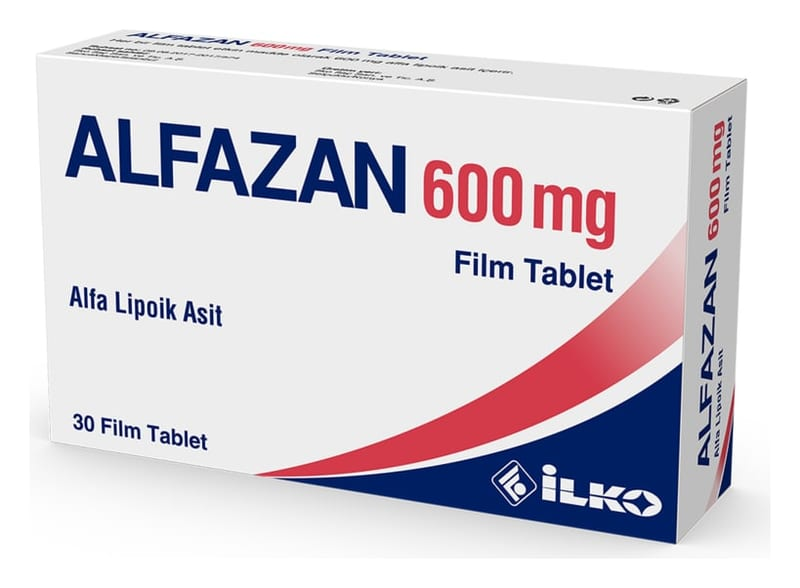

Alfazan 600 mg Film Tablet, 30 Adet

Ne için kullanılır
KT · Bölüm 1ALFAZAN, etkin madde olarak 600 mg alfa-lipoik asit içeren film kaplı tabletlerdir.
Alfa-lipoik asit, sindirim sistemi ve metabolizma ürünleri grubunda yer almaktadır. Alfa- lipoik
asit, vücut metabolizması sırasında oluşan bir maddedir ve vücudun belli bazı metabolik
işlevleri üzerine etkiye sahiptir. Ayrıca, zararlı parçalanma ürünlerine karşı sinir hücrelerini koruyucu özelliklere (anti-oksidatif) sahiptir.
ALFAZAN, 30 film tablet içeren, Alüminyum / Alüminyum (Alu / Alu) blister ambalajlarda ve
kutusunda sunulmaktadır.
ALFAZAN, şeker hastalığında (diyabet) diyabetik nöropati adı verilen, çevresel sinir hasarına
bağlı olarak vücudun uç bölgelerinde ortaya çıkan ağrı, his kaybı, kuvvet kaybı gibi belirtilerin
tedavisinde kullanılır. 1/6